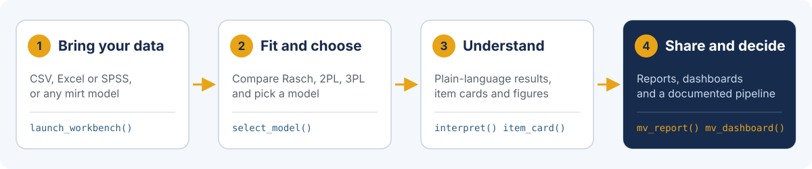

Madde tepkilerinden savunulabilir kararlara; R kodu yazarak ya da yazmadan.
mirtverse, R. Philip Chalmers’ın geliştirdiği mirt paketi için kullanıcı dostu bir iş akışı ve raporlama katmanıdır. mirt, madde tepki kuramı (MTK) modellerini kestirir; mirtverse ise model seçmenize, sonuçları anlamanıza, yayına hazır grafikler üretmenize ve sonuçları R kullanmayan kişilerle paylaşmanıza yardım eder.
Türkçe özet kılavuzu indirin (PDF) Canlı örnek gösterge panelini açın

Sitenin geri kalanı, kitap ve laboratuvarlar şimdilik İngilizcedir. Bu sayfa, Türkçe konuşan kullanıcılar için bir başlangıç noktasıdır.
Kurulum
mirtverse, R-universe üzerinden derlenmiş paket olarak kurulur:
install.packages("mirtverse",
repos = c("https://okanbulut.r-universe.dev", "https://cloud.r-project.org"))
library(mirtverse) # mirt paketi de yüklenirİlk analiz
Aşağıdaki kod, mirt ile gelen LSAT7 verisiyle tam bir analiz yapar.
Kendi verinizle çalışmak için data satırını değiştirmeniz
yeterlidir; verinin her sütunu bir madde, her satırı bir birey
olmalıdır.
data <- expand.table(LSAT7)
sel <- select_model(data) # Rasch, 2PL ve 3PL'yi karşılaştırır ve birini önerir
mod <- sel$best # sıradan bir mirt modeli
interpret(mod) # sonuçların anlamı, sade bir dille (İngilizce)
item_table(mod) # madde istatistikleri, uyum ve uyarılar tek tabloda
gg_wright(mod) # birey-madde haritası (Wright haritası)
item_card(mod, "Item.2") # tek sayfalık madde durum kartı
mv_report(sel, file = "rapor.html") # her şey tek bir HTML dosyasında
mv_dashboard(mod, title = "LSAT sonuçları") # paylaşılabilir etkileşimli panelKod yazmak yerine tıklamayı mı tercih edersiniz?
launch_workbench() komutu, her adımın R kodunu sizin için
yazan tıkla-çalıştır bir uygulama açar.
Hangi MTK modeli?
Model seçimi, bir MTK analizindeki ilk gerçek karardır. Maddelerin
nasıl puanlandığından (1-0, sıralı kategoriler, sırasız seçenekler) yola
çıkan tek sayfalık akış şeması
(İngilizce), sizi bir modele ve onu kestiren R koduna götürür. Emin
değilseniz select_model(data) aday modelleri sizin için
karşılaştırır.
Kimin için?
| Ben… | Buradan başlayın (İngilizce) |
|---|---|
| MTK öğrenen ya da tez verisini çözümleyen bir öğrenciyim | Öğrenciler · Tez kiti |
| Ölçme ve değerlendirme dersi veriyorum (kitap, on laboratuvar, örnek ders izlencesi) | Öğretim elemanları · Dersinizde kullanın |
| Bir sınav ya da sertifika programında çalışan bir psikometristim | Sınav programları · Örnek olay |
| mirt, ltm, eRm, TAM veya irtQ kullanan bir araştırmacıyım | Araştırmacılar · mirt’e geçiş |
| R’ye yeniyim ya da Winsteps, SPSS veya Excel’den geliyorum | R’ye yeni olanlar |
| Ölçmede yapay zekâ ile ilgileniyorum | Yapay zekâ merkezi |
Alışılmış MTK araçlarının ötesinde
-
Analizi anlatın, betiği alın.
mv_ask(), tek cümlelik bir istekten test edilmiş bir R betiği yazar. Claude, bir OpenAI modeli, yerel bir model ya da çevrim dışı bir ayrıştırıcıyla çalışır. Nasıl çalışır - Analizi Claude yapsın. Claude Code için mirtverse eklentisi, Claude’u modelleri kestiren, maddeleri ve DMF’yi kontrol eden, bireyleri puanlayan ve sonunda bir rapor ile bir R betiği bırakan bir psikometriste dönüştürür. mirtverse ajanı
-
Madde üretin.
generate_items(), bir belirtke tablosundan anahtarlı çoktan seçmeli maddeler ve rubrikli açık uçlu maddeler taslağı hazırlar;generate_isomorphs()bir madde modelinden madde aileleri üretir. -
Açık uçlu cevapları puanlayın.
train_scorer()çevrim dışı çalışan, şeffaf bir puanlama motoru eğitir;score_open()her puan kullanılmadan önce insan puanlayıcılarla uyumu kontrol eder. -
Bütün bir sınav programını yürütün.
mv_pipeline(), bir testi belirtke tablosundan madde bankası izlemeye kadar 13 aşamada taşır. Ölçme süreci
Kısa videolar
Üç kısa tanıtım videosu (her biri yaklaşık 90 saniye, İngilizce altyazılı): Workbench turu · Yapay zekâ merkezi · Tez kiti.
mirt hakkında
R. Philip Chalmers tarafından geliştirilen ve sürdürülen mirt, madde tepki kuramı için en kapsamlı açık kaynak paketlerden biridir. 30’dan fazla madde türüyle tek ve çok boyutlu modelleri, çok gruplu ve karma etkili modelleri, örtük sınıf ve bilişsel tanı modellerini kestirir.
mirtverse, mirt’e dayanır ve modellerin kestirilme biçimini
asla değiştirmez. Her fonksiyon mirt::mirt() ile
oluşturulmuş bir modeli kabul eder; iki paket arasında istediğiniz an
geçiş yapabilirsiniz.
Atıf
Lütfen mirtverse’e mirt ile birlikte atıf yapın. R’de
citation("mirtverse") komutunu çalıştırın ya da İngilizce ana sayfadaki atıf
bilgilerini kullanın.